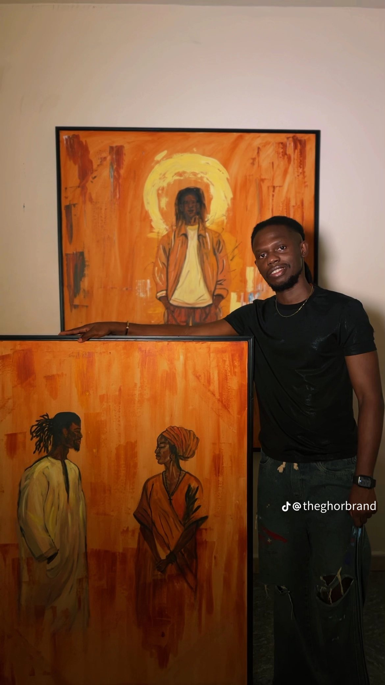
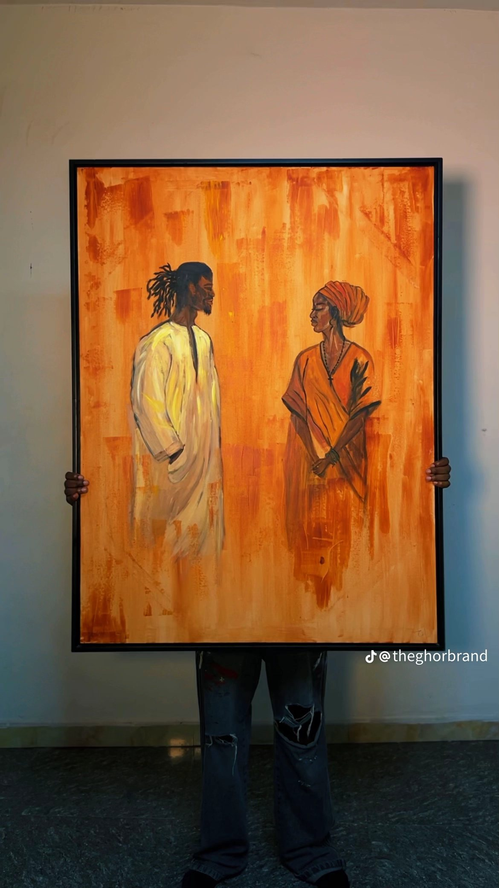
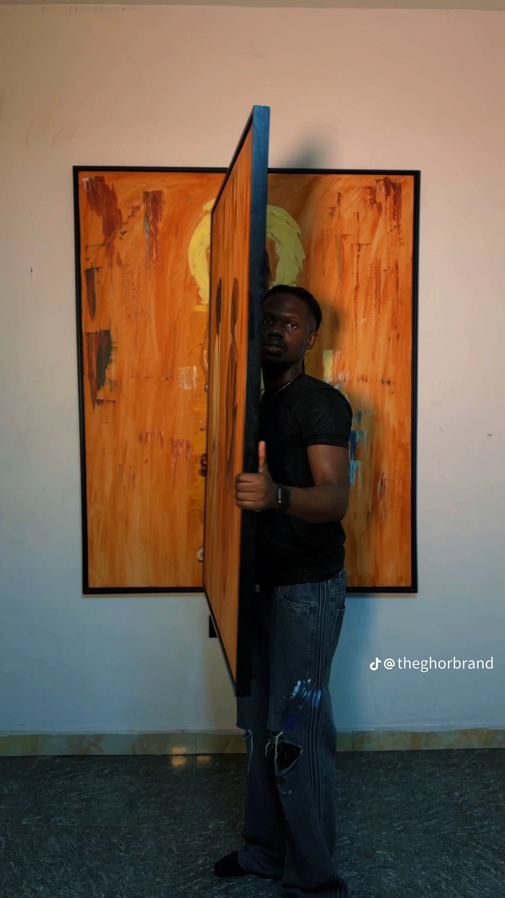

About · Ogor Opene
Still forming. Still questioning.
The artist
The Ghor Brand is the studio of Ogor Opene, a Nigerian visual artist making contemporary African art about identity, growth and the human experience. His figures are caught mid-transformation, somewhere between who they have been and who they are becoming.



Likes on TikTok
Followers watching the process
Works in Becoming
Feature in the London press
The work
Identity
Who we are is not fixed. The paintings ask who we might still become.
Growth
Becoming as an ongoing state: uncertain, unfinished and honest about it.
Silence
The expectations we inherit, and the things we learn not to say.
Courage
The moment you decide that what comes after speaking is worth the risk.
Material
Acrylic, nylon and thick impasto, built up so the surface carries the story too.
Practice
The unfinished quality of the work is intentional. Rather than depicting arrival, each painting captures a moment of transformation: the space between who we have been and who we are becoming.
The process is shared openly, from a blank canvas to the final layer, with a community on TikTok and YouTube. Becoming has been released in drops, with work exhibited in Lagos and featured by Metro Africana in London.